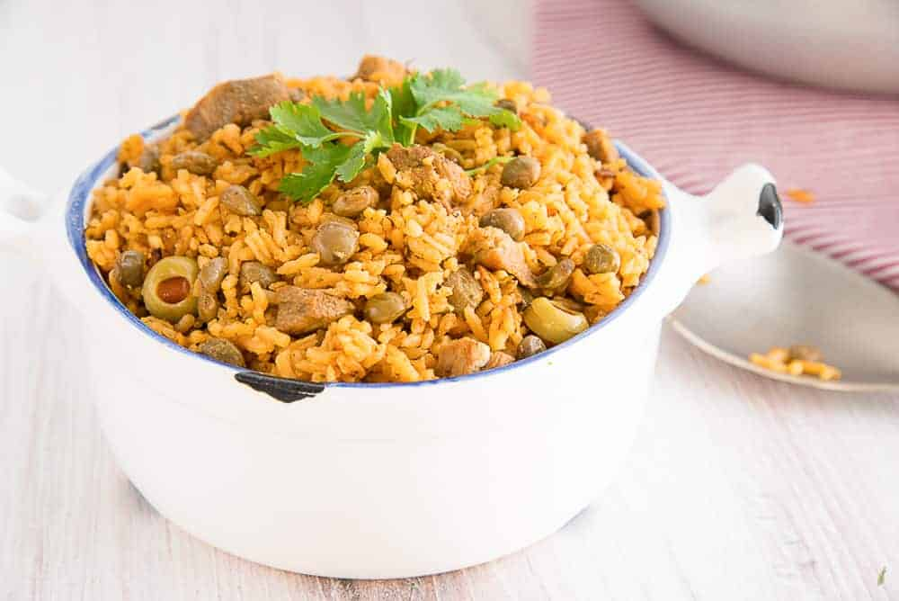
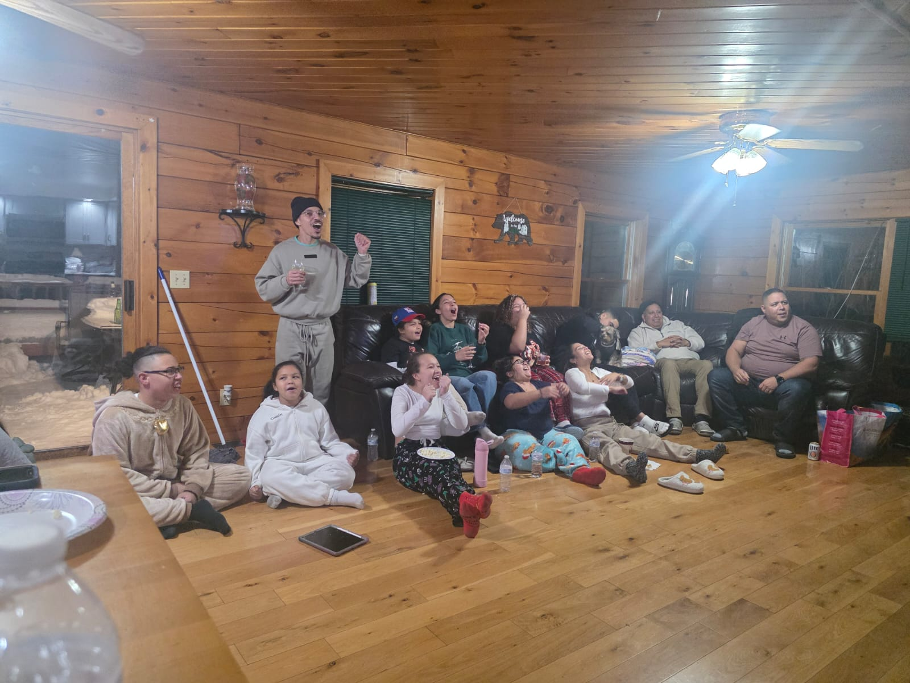
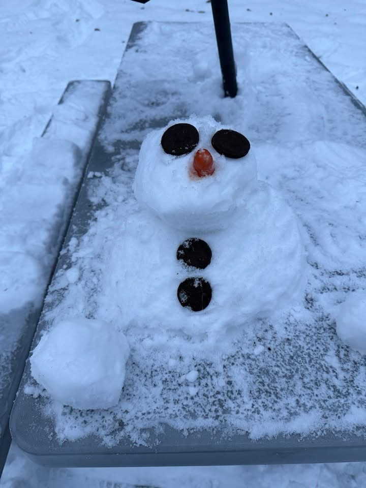

Christmas In my Family!
A brief glimpse into my Holiday life
Food
the image on top is one of my favorite dishes of all time, On the right side you see some dishes of food. These dishes are usually only exclusivly made durimg the holidays! Together during the holidays, my family and I make these dishes for Thanksgiving, Christmas ans New Years!
Christmas Day Activities
The image is above is a tradition my family and I do on Christmas. Our tradition on christmas eve is to watch a christmas movie together and when the clock hits 12, we open gifts!
Winter Activities
If we get lucky and it Snow's during Christmas time, we usually have a snowman contest, sledding races, as well as snow ball fights (which we take way too seriously). The image above is my mini snow man that won last year's snowman competiton